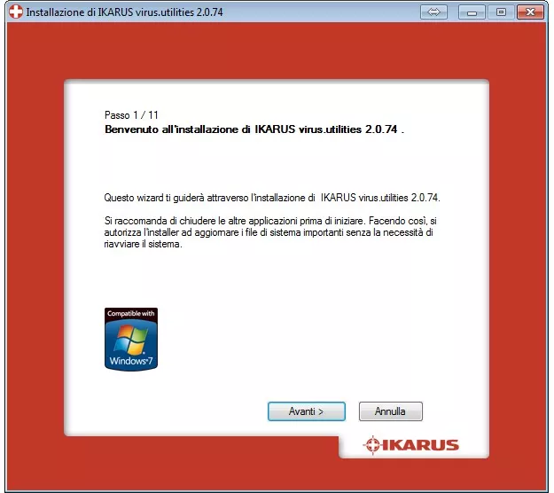
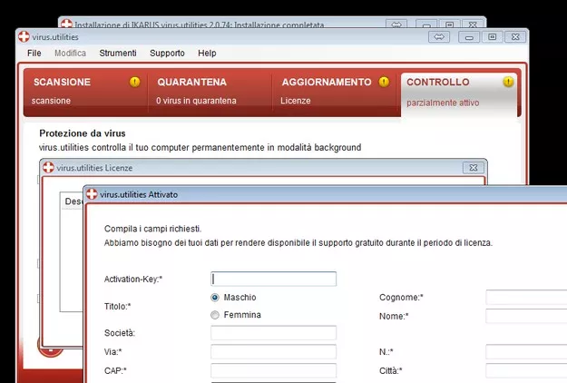

Fra le tante minacce informatiche che ogni giorno, ahimè, possiamo incontrare nella nostra navigazione su Internet, i keylogger sono sicuramente una delle più pericolose. È questo tipo di malware, infatti, che i malintenzionati usano per carpire le password, i numeri delle carte di credito e gli altri dati sensibili che digitiamo sulle tastiere dei nostri PC. Ecco perché è importantissimo avere un antivirus che sia in grado di rilevarli, identificarli e rimuoverli efficacemente.
IKARUS virus.utilities è un antivirus leggero ed affidabile in grado di garantire una protezione completa contro virus, malware e tanti altri tipi di minacce informatiche, come appunto i keylogger. Si aggiorna automaticamente ogni 20 minuti ed è disponibile in una versione di prova gratuita completa. Che ne dici di scoprire insieme come proteggersi dai keylogger utilizzandolo?
Se vuoi scoprire come proteggersi dai keylogger, il primo passo che devi compiere è collegarti al sito Internet di IKARUS virus.utilities e cliccare prima sul pulsante Versione di prova e poi sulla voce Download Setup-virus_utilities_2.0.74.exe (18,25 MB) per scaricare una versione di prova gratuita del programma sul tuo PC. A download completato apri, facendo doppio click su di esso, il file appena scaricato (Setup-virus_utilities_2.0.74_IT.exe) e, nella finestra che si apre, clicca prima su Sì (per autorizzare l’installazione su Windows 7 e Vista) e poi su OK e Avanti.
Accetta quindi le condizioni di utilizzo del programma, cliccando sul pulsante Accetto, e fai click prima sul pulsante Controllo per controllare che il sistema abbia tutti i requisiti per supportare IKARUS virus.utilities e poi su Avanti per due volte consecutive e Installa per completare l’installazione del programma (ci vogliono pochissimi secondi). A procedura ultimata, clicca su Avanti ed effettua la configurazione iniziale di IKARUS virus.utilities impostando i parametri di rete per eseguire l’aggiornamento delle definizioni antivirus. Di solito, basta lasciare le impostazioni predefinite e cliccare su Avanti.

Ad aggiornamento ultimato, imposta il tipo di protezione in tempo reale che vuoi usare sul tuo sistema (ti consiglio di lasciare tutte le opzioni attive) e clicca sul pulsante Avanti, metti il segno di spunta accanto alla voce Installare versione demo e clicca ancora una volta su Avanti e poi su Fine per terminare il processo d’installazione di IKARUS virus.utilities.
A questo punto, IKARUS virus.utilities ti avvertirà che non hai attivato la tua copia del programma. Clicca quindi sul pulsante Aggiungi licenza presente nella finestra dell’avviso che è comparsa e fai click su Activation-Key per inserire nel programma la chiave per attivare la versione di prova gratuita di IKARUS virus.utilities.
Per ottenere la chiave di attivazione di IKARUS virus.utilities,collegati a questa pagina del sito Internet del programma e clicca sulla voce Ottieni codice di attivazione. Compila quindi il modulo che ti viene proposto con i tuoi dati personali (nome, indirizzo, email, ecc.), metti il segno di spunta accanto alla voce Accetto i termini della privacy e clicca sul pulsante Ottieni codice di attivazione per ottenere il codice di registrazione via e-mail.

Ecco fatto! Adesso IKARUS virus.utilities è installato, attivato e pronto a bloccare qualsiasi minaccia informatica si affacci nel tuo PC, sia quando sei online che quando sei scollegato da Internet. Il programma aggiorna le definizioni che servono per proteggersi dai keylogger, dai virus e da altre minacce informatiche ogni 20 minuti, il che assicura una protezione completa anche contro i malware più recenti e pericolosi.
Per avviare una scansione del computer e controllare la presenza di virus/malware/keylogger in esso, devi recarti nella scheda SCANSIONE della finestra principale di IKARUS virus.utilities, selezionare il profilo di scansione che preferisci eseguire (Scansione veloce del sistema per controllare solo i punti chiave del sistema, Partizione del sistema per controllare solo la partizione del disco su cui risiede Windows, Tutto il computer per effettuare una scansione completa o Unità rimovibili per controllare solo le penne USB e gli altri dispositivi rimovibili collegati al PC) e cliccare sul pulsante Scansione Ora che si trova in basso a destra.
Puoi trovare maggiori informazioni sui prezzi della versione completa e le caratteristiche di IKARUS virus.utilities sul sito ufficiale del programma.